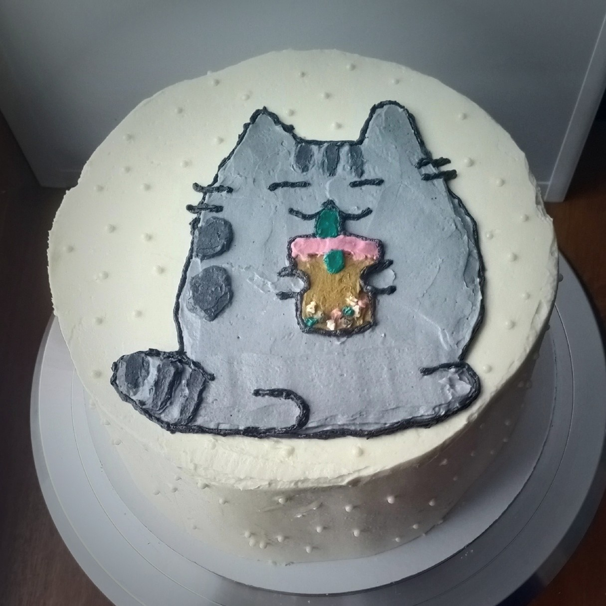
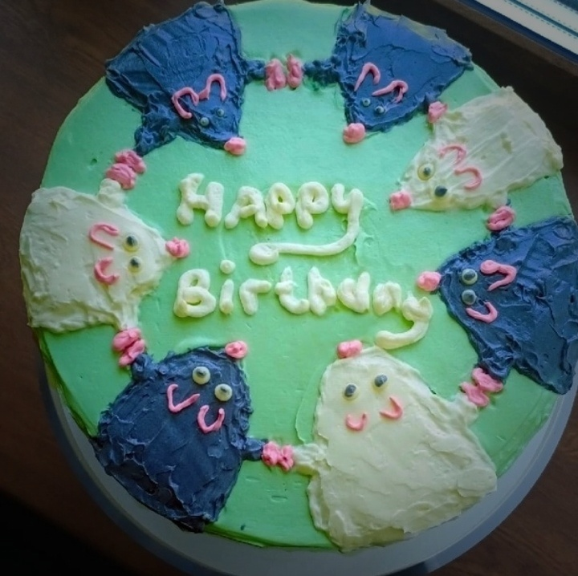
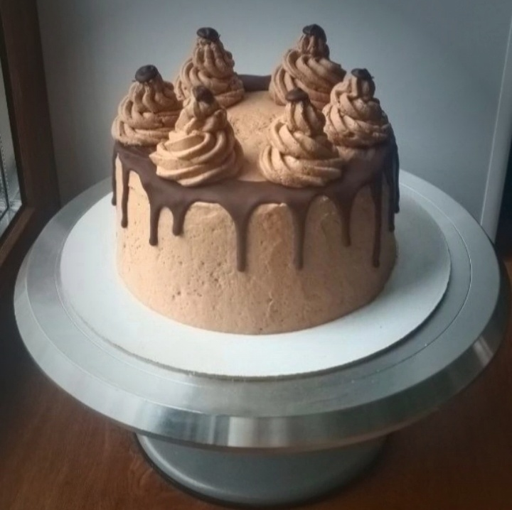

Торты и сладости ручной работы - отличная возможность порадовать себя и близких! 🤗
Хороший вариант подарка любимой, подруге, сестре, матери, бабушке, детям и другим родственникам.💫
Для приготовления всех изделий я использую только самые свежие ингредиенты. Для того чтобы узнать о тортике поподробнее, наведите мышкой на картинку🌺
 Невероятно милый тортик с котиком Пушином из нежного творожного крема🐈  Красный бархат – классический торт с эффектным контрастомШоколадная поляна Ягодный бум Бесконечный небосвод
 Торт "Прага"Мяу Мяу Мяу Хоровод с подружками Любит не любит?
Пражское воспоминание Сумерский Для "Ванилек"